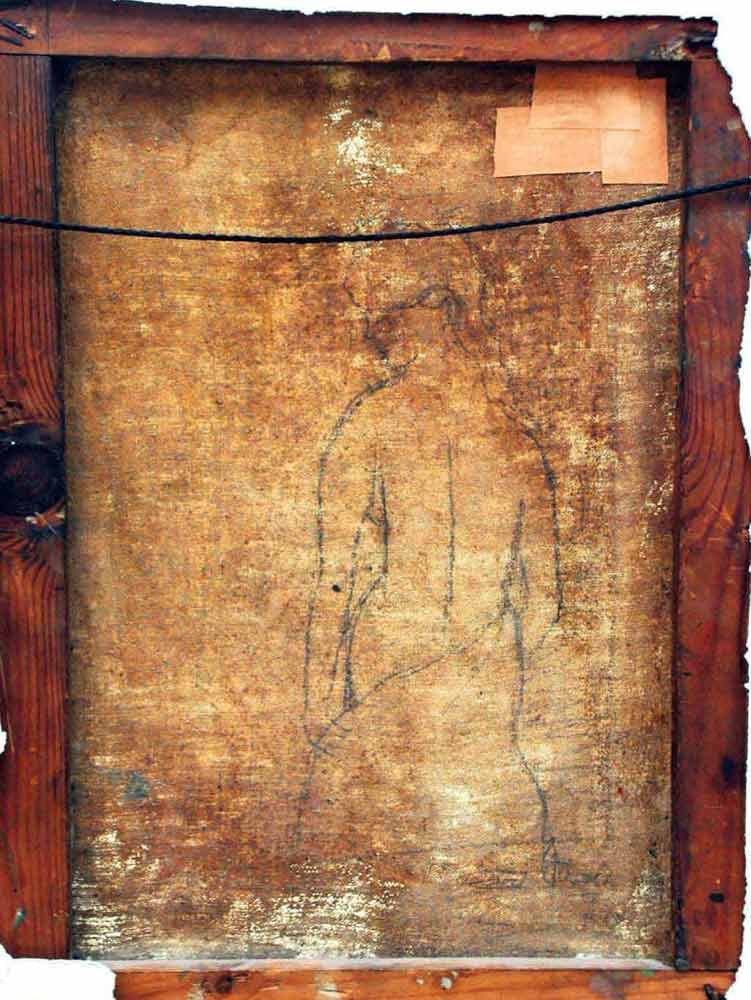

Vedat Atacan’ın Nâzım’a ait dediği, tablonun arkasındaki desen
“...
Sana Şili’nin kış krizantemlerinden bir demet
sunuyorum
Ve soğuk ay ışığını güney denizleri üstünde
parıldayan
halkların kavgasını ve kavgamı benim
ve boğuk uğultusunu acılı davulların, kendi
yurdundan...
Kardeşim benim, adanmış asker, dünyada nasıl da
yalnızım sensiz
senin çiçek açmış bir kiraz ağacına benzeyen
yüzünden yoksun
dostluğumuzdan, bana ekmek olan,
rahmet gibi susuzluğumu gideren ve kanıma güç katan.
Zindanlardan kopup geldiğinde karşılaşmıştık seninle
kuyu gibi kapkara zindanlardan
canavarlıkların, zorbalıkların, acıların kuyuları
Ellerinde izi vardı eziyetlerin
Hınç oklarını aradım gözlerinde
Oysa sen parıldayan bir yürekle geldin
Yaralar ve ışıklar içinde
...”
Ataol Behramoğlu, “Kardeş Türküler” s. 232, 233 (Pablo NERUDA“Nâzım’a Bir Güz Çelengi” Çeviren: Ataol Behramoğlu)